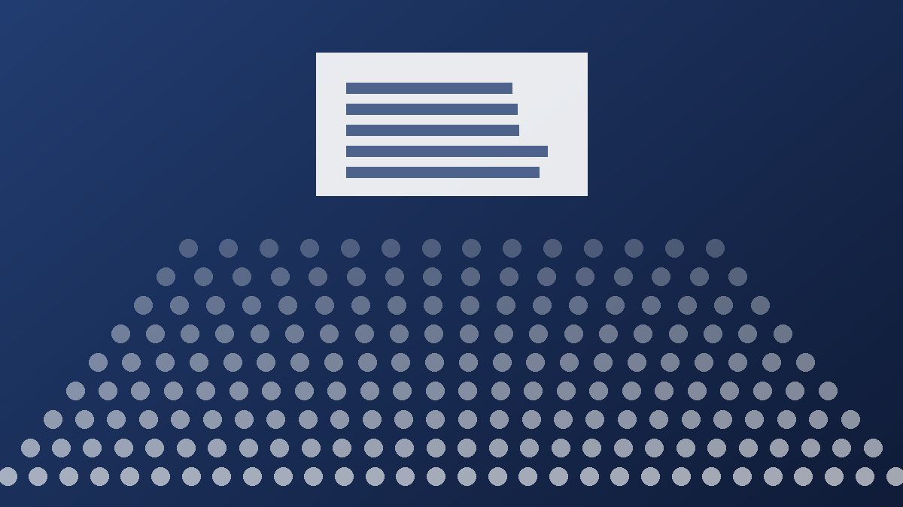
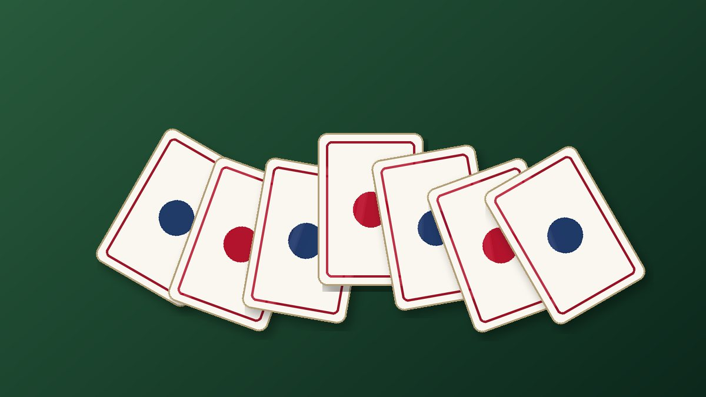

Demostración fuera de Drupal. La página real es cienzdel.unizar.es/eventos. Añade ?editor a la dirección para ver la vista de editor.
Prototipo con eventos ficticios. Ninguno de estos eventos existe y los enlaces de inscripción son de prueba.
Actividades organizadas por el Consejo de Estudiantes de la Facultad de Ciencias. Pulsa «Más información» para ver los detalles de cada una y «Inscribirse» para apuntarte.

Egresadas y egresados de los cinco grados de la Facultad cuentan qué hicieron al terminar la carrera: investigación, empresa, docencia y oposiciones.
La jornada se organiza en dos mesas redondas de 45 minutos con turno de preguntas al final. Habrá café en el vestíbulo durante el descanso.
La asistencia puede reconocerse como actividad de participación estudiantil. Consulta cómo pedir el certificado en Certificados y créditos.

Segunda edición del torneo de mus de la Facultad. Inscripción por parejas, eliminatoria directa y premios para las tres primeras.
Las partidas se juegan a 40 tantos, con ocho reyes. El cuadro se publicará en el Instagram del Consejo el día anterior.
Bases completas y palmarés de ediciones anteriores en Torneos.
Taller práctico para empezar el Trabajo Fin de Grado en LaTeX: estructura del documento, bibliografía, figuras y ecuaciones.
Trabajaremos con las plantillas del Consejo como ejemplo. No hace falta saber LaTeX.
Proyección y coloquio sobre cómo retrata el cine el trabajo científico.
Lo hemos cancelado porque el aula no está disponible ese día. Buscaremos otra fecha en el segundo semestre.
Sesión ordinaria del Pleno. Es pública: cualquier estudiante de la Facultad puede asistir con voz y sin voto.
El orden del día se enviará con la convocatoria. Las normas de funcionamiento están en el Reglamento, y la lista de representantes en Representantes.
Tres tardes de guiñote por parejas al terminar los exámenes del primer semestre.
Primera fase por grupos el miércoles y el jueves, final el viernes. Bases en Torneos.
Ejemplo de evento en borrador: solo lo ve quien tiene sesión iniciada en la web.
Presentación del Consejo de Estudiantes al estudiantado de primer curso, visita por la Facultad y almuerzo.
Las diapositivas y la guía para primer curso están en Primer curso.
Primer párrafo: resumen corto que sale en la tarjeta.
Lo demás solo sale al pulsar «Más información». Quita «Estado: borrador» cuando quieras publicarlo.